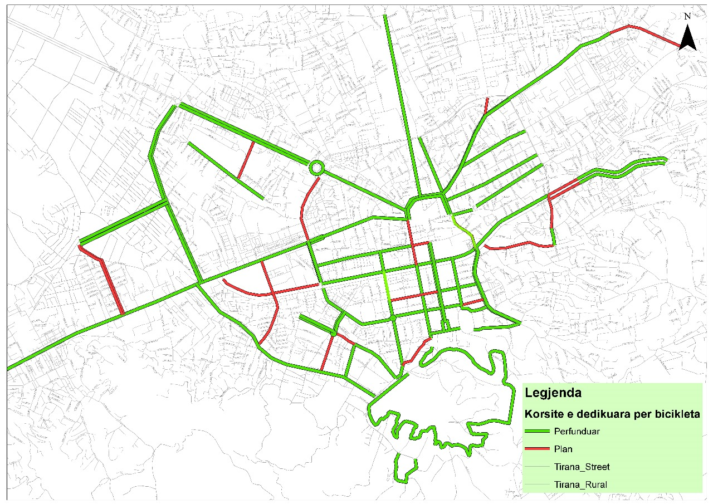

Do you have a bike?
Cycling
🚴♀️ Cycling for Cleaner Air: Pedal Towards a Greener Future 🌍
In an era where environmental concerns are more pressing than ever, choosing to cycle rather than drive is one of the most impactful decisions you can make for our planet. Here’s how cycling contributes to cleaner air and a healthier environment:
Reducing Air Pollution
When you opt for cycling over driving, you’re directly helping to reduce air pollution. Vehicles emit pollutants like nitrogen oxides, carbon monoxide, and particulate matter, which contribute to smog and respiratory problems. By replacing short car trips with bike rides, you decrease the number of emissions released into the atmosphere. Less traffic means less congestion, which translates to fewer idling engines and reduced overall pollution levels.
Cutting Greenhouse Gas Emissions
Cars and trucks are major sources of greenhouse gases, particularly carbon dioxide (CO2), which drive climate change. Cycling produces zero emissions, making it an eco-friendly alternative. Every time you choose to bike instead of drive, you're cutting down on your carbon footprint and contributing to a cooler, more stable climate.
Encouraging Cleaner Urban Spaces
In cities, the reduction of vehicle use leads to less road noise and improved air quality. This creates a more pleasant and healthy environment for everyone. Communities with high cycling rates often see a reduction in smog and improved overall air quality, enhancing the quality of life for residents and making urban spaces more enjoyable for all.
Promoting Sustainable Transportation
Cycling is not just a mode of transport; it’s a movement towards sustainability. By embracing cycling, you’re supporting a culture of green, active transportation. This shift helps to build infrastructure that supports eco-friendly travel, like bike lanes and parking facilities, and encourages others to consider more sustainable transportation options.
Join the Movement 🚲
Every pedal stroke you make is a step towards cleaner air and a healthier planet. Whether you're commuting to work, running errands, or simply enjoying a leisurely ride, your choice to cycle contributes to a collective effort to combat air pollution and climate change. Join the growing number of people who are making a positive impact on the environment through the simple act of cycling. Together, we can pedal towards a greener future!
Tirana
Bike Friendly
Our capital, Tirana, is a very bike-friendly city, with dedicated bike routes, making it so easy for us to just use out bikes and enjoy the nature. You don't believe us?! Check the cycling routes all over Tirana in the map below:
Take your time to appreciate the nature
Enjoy
Tirana is a ... Here are some of the sports that you can walk by just to get a glimse of the fresh air and the unbeatable beauty of nature while doing many different activities.